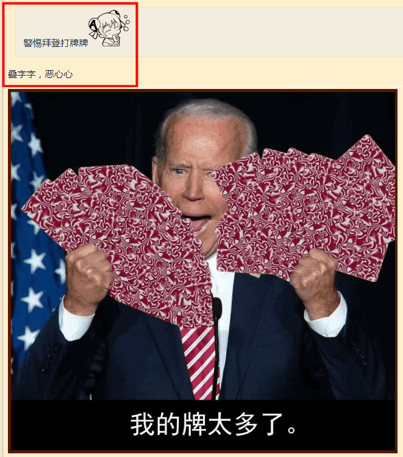
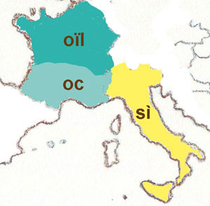
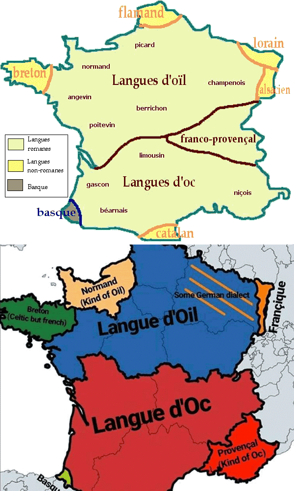

“我手里的牌实在是太多了①”，纪尧姆・欧雷玛尼扑克托斯正在打扑克，这一局“跑得快”又输了。
“欧雷……先生的手气还是不太顺啊”，前台看到纪尧姆又来兑换筹码就应景嘘寒问暖，然后不好意思的补充，“抱歉，我记不得那许多名字”。
“俺也记不得”，纪尧姆随口搭话，然后拿着筹码回到牌桌，“抓着满满两手牌的感觉倒是不错，哼，想打哪张打哪张”。
“嗤，反法贱种高卢通还嘴硬？”牌友甲嘲笑，“你打过‘够级’么？”
“兜里没钱就上街闹革命那种？”纪尧姆还嘴，“抱歉，我没接触过什么导师”。
“不是‘伊玛目’么？”牌友乙帮腔嘲笑，“不找个导师骑在头上拉屎就浑身不舒服的抖哎姆”。
“我又不信绿教”，纪尧姆反驳，“还是那种绿教”。
“眼瞅着条约到期”，牌友丙嘲笑，“你们该滚蛋了吧？”
“关我屁事？我又不是土耳其人”，纪尧姆就是事不关己高高挂起的态度，“我是希腊人”。
“但却起了个法兰西名字”，牌友甲质疑，“怀疑是不远万里从三洲通衢偷渡入境的间谍特务卧底”。
“然也，土生土长三十年，黎塞留阁下都没意见”，纪尧姆的巴黎口音字正腔圆，故意把小舌擦音发得甚为响亮，“倒是你们仨，说话有兽人味②③”。
“油腔滑调②③有什么可自豪的”，牌友乙反唇相讥，“没准啥时候白金汉宫宣布你们是流氓国家然后出动皇家海军讨伐恐怖分子呢”。
“这时候就当我是法国人啦？”纪尧姆抓住破绽，“呀，你们倒是与教与政府划清界限自绝于路易陛下和黎塞留阁下啦！”
“反了反了！”牌友丙掀桌子，“傻哔绿人发动自杀式恐怖袭击啦！”
未完待续
-
① ③ 法国南方将「是（同意，然也）」讲成 oc
，
而北部则讲成oïl
（现在演变为oui
），
所以两种口音分别称为奥克语及奥依语。
「有人说oc
，有人说si
，有人说oïl
」
——但丁·阿利吉耶里《论俗语》 ②